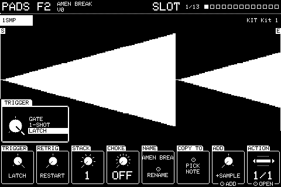
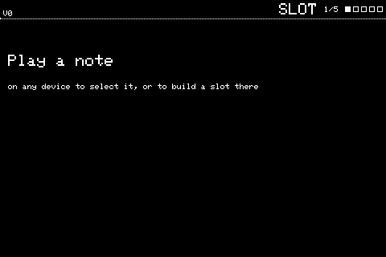
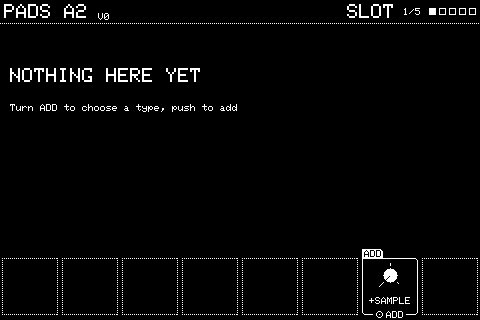

Chapter 1
Basics
1.1 Getting around
The screen has a header along the top, a picture in the middle and a row of eight columns along the bottom. Column n is knob n, counting from the left.
Turning a knob changes its column. A column with a push action says so on its bottom edge. Holding Shift shows what Shift changes: on most settings, Shift + push puts the setting back to how a new one has it (RESET), and Shift + turn makes finer steps (FINE).
While you turn or push a knob, a box can appear above its column for 1.5 seconds with the setting in full: every choice of a list, a file's details, or a name too long for the column. Settings whose column already shows everything get no box.
Two-state settings are drawn as a switch, filled when on, and pushing them flips them. Knobs that step through a list (ACTION, DEVICE, TARGET and so on) show a small list with arrows rather than a dial.
| Panel button | Launchpad today | Does |
|---|---|---|
| Knob 1 to 8 | Right-hand column picks a knob (top is 1); User 1 turns it down, User 2 up; press the picked button again to push it | Turns or pushes that column |
| SHIFT | Mixer (top row, far right), held | Second functions |
| PREV / NEXT | Left / right arrows | Previous or next page; with Shift, the first or last |
| MODE | Tap Session | Closes the screen that's open |
| SAVE | Shift + Session | Saves the project; the first time it asks for a name |
| BROWSE | Session + up | Opens the file browser |
| LEARN | Session + down | CC learn: turn a setting, press LEARN, move a controller knob |
| Shift + LEARN | Mixer + Session + down | The list of CC bindings (CCS) |
| KIT | Shift + up | The inputs overview |
| SETUP | Shift + down | Device settings |
| EDIT | Shift + left | The list of every slot (SLOTS) |
| MIXER | Shift + right | The mixer |
| UNDO / redo | Session + User 1 / Session + User 2 | Undo and redo recording and pattern edits |
| PLAY, STOP, REC, OVERDUB, ERASE, REPEAT, TAP, SEQ | Session + the right-hand column, top to bottom | The transport, and SEQ opens the sequencer |
| Shift + SEQ | Hold Session, then Mixer, then the bottom of the right-hand column | The arrangement |
| Shift + REC | Hold Session, then Mixer, then the third button of the right-hand column | SAMPLING: record the main out or a mixer channel |
| Up / down on their own | Change kit (an octave in Keys) |
1.2 Detail box
Turn or push a knob whose column can't show everything.
Launchpad: the same.

Here TRIGGER is being turned: its column shows LATCH, and the box above lists all three choices with the current one picked out. It goes 1.5 seconds after the knob stops.
1.3 Nothing selected
At power-up with an empty project.
Launchpad: the same.

Play a note on any device. If a slot plays from that note it's selected and its pages appear; if not, the empty note screen offers to build one.
1.4 Empty note
Play a note that nothing plays from.
Launchpad: the same.

The note is selected, ready to build a slot on it.
| Knob | Setting | Turn | Push |
|---|---|---|---|
| 7 | ADD | Choose the first action: SAMPLE, MIDI or TRIGGER | Creates the slot on this note with that action, and opens it |
Knobs not listed do nothing here. Shift + push puts most settings back to how a new one has them.